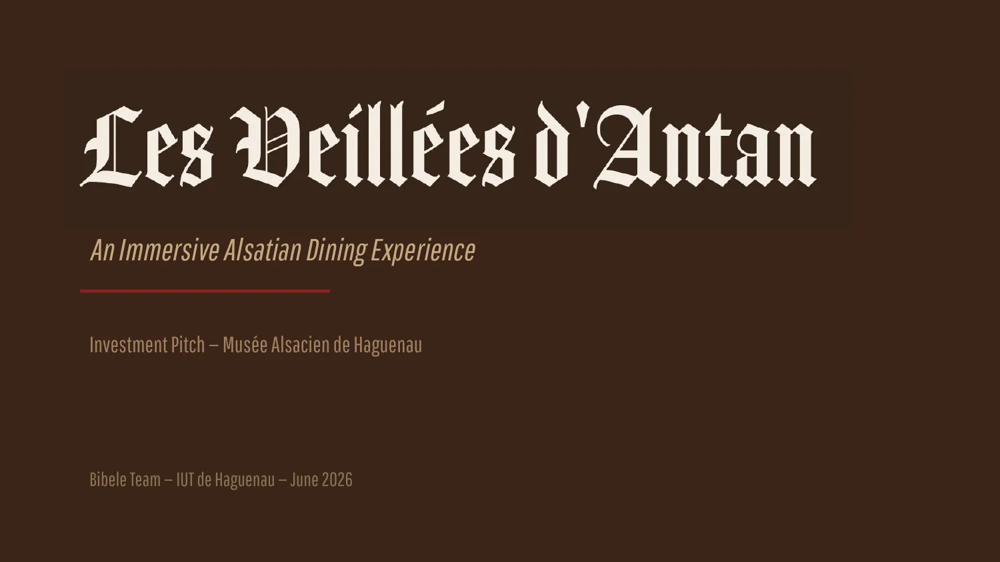
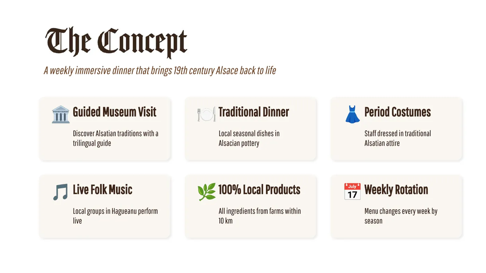
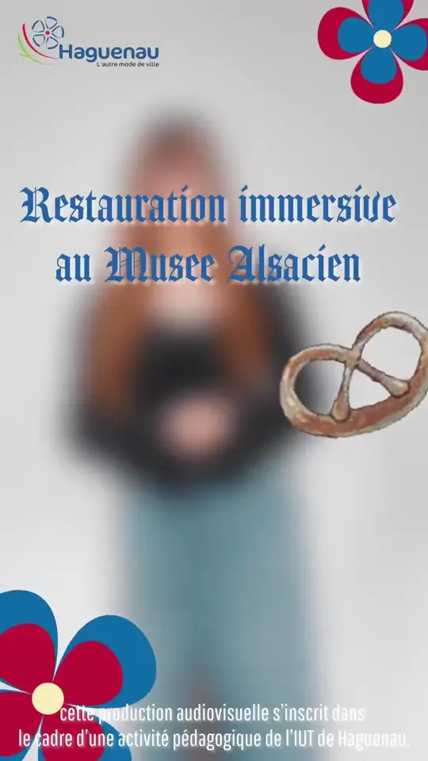
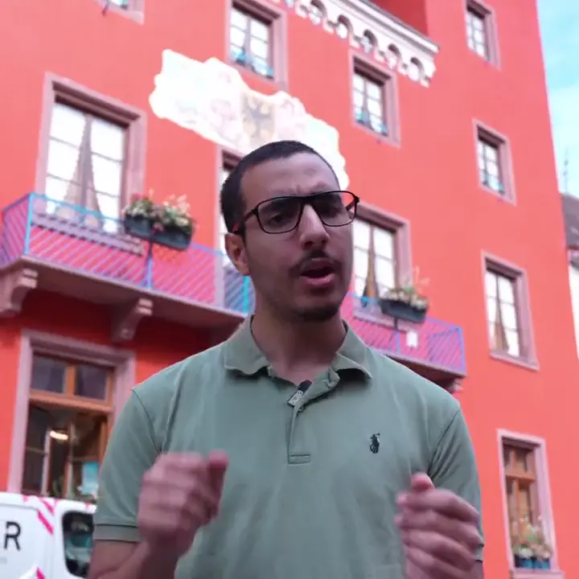
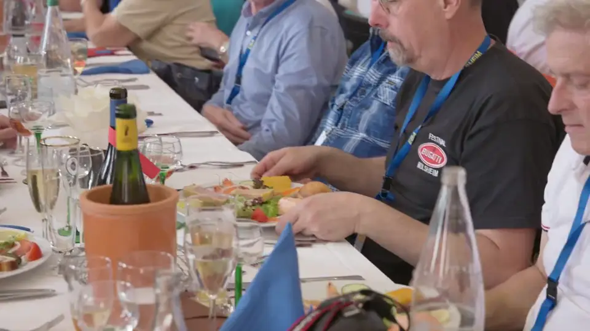

Les Veillées d’Antan
Un dîner immersif pour faire vivre le Musée alsacien de Haguenau. Comme chef de projet, j’ai mené l’audit, construit la stratégie de communication et coordonné une équipe de 7.
- Mon rôle
- Chef de projet
- Équipe
- 7 étudiants
- Date
- Juin 2026, SAÉ 202
- Outils
- Trello, Discord

Le problème
Le Musée alsacien de Haguenau présente la vie des Alsaciens au XIXe siècle. Mais sa visite est purement passive : on regarde, on ne touche pas. Sa cuisine reconstituée, par exemple, est interdite d’usage. Et le musée est presque invisible en ligne, alors que plus de la moitié des touristes en Alsace viennent de l’étranger.
- 3 €
- le prix d’entrée, le plus bas de la région
- 736
- abonnés Instagram, sur un compte partagé
- 54 %
- de touristes internationaux en Alsace
Mon rôle
J’étais chef de projet d’une équipe de 7 : graphistes, développeurs et vidéastes. En plus de la coordination, j’ai réalisé moi-même l’audit stratégique, la stratégie de communication complète, le rapport sur le RGPD et le droit à l’image, et la partie sur le développement durable.
L’audit
J’ai comparé le musée à quatre établissements proches, sur leurs prix, leurs formats de visite et leur communication. En plaçant chacun sur une carte « prix » et « type d’expérience », un vide est apparu : personne ne proposait une expérience immersive à un prix accessible.
L’audit a aussi révélé une opportunité de calendrier : le Musée alsacien de Strasbourg est fermé jusqu’en 2028. Pendant ce temps, Haguenau est le seul musée des traditions alsaciennes du Bas-Rhin.
Le concept
Un dîner hebdomadaire qui fait revivre l’Alsace du XIXe siècle. Pendant 3 heures, les visiteurs suivent une visite guidée trilingue, dégustent des plats de saison servis dans de la poterie alsacienne, écoutent des musiciens locaux et sont accueillis par un personnel en costume d’époque. Tous les produits viennent de fermes situées à moins de 10 km.


Les publics
Nous avons construit 5 personas. Chacun a orienté un choix concret : la peur de la barrière de la langue chez les touristes étrangers, par exemple, a conduit à une visite et à une communication en trois langues.
Elle recherche une expérience originale et mémorable à vivre près de chez elle.
Il veut découvrir une culture authentique, mais craint la barrière de la langue.
Elle veut partager les traditions alsaciennes avec sa famille dans un cadre nouveau.
La stratégie
Un seul message, quel que soit le canal : une expérience qui n’est ni une simple visite de musée, ni un simple restaurant, mais les deux à la fois. Il est décliné en français, en anglais et en allemand, sur les canaux que nos publics utilisent vraiment : un site WordPress trilingue avec réservation, GetYourGuide et Viator, Instagram, Facebook, Google Maps, YouTube et une newsletter.
J’ai fixé deux objectifs mesurables, qui servaient aussi d’indicateurs pour le bilan :
- 850
- abonnés en 3 mois, dont au moins 30 % de l’étranger
- 40
- couverts réservés par soirée dès le premier mois
La campagne, déclinée en vidéo
Les vidéastes de l’équipe ont tourné et monté la campagne. Le même message existe en trois formats, un par usage : on ne regarde pas une vidéo de la même façon dans une story et sur YouTube. Dans les versions YouTube et carrée, c’est moi qui présente le projet face caméra.
-

Stories et Reels 9:16 · 32 s
-

Fil Instagram et Facebook 1:1 · 1 min
-

YouTube et site 16:9 · 1 min 47
Piloter l’équipe
Pour coordonner 7 personnes, j’ai réparti les rôles, organisé le travail sur Trello et Discord, et lancé des réunions quotidiennes. J’ai aussi anticipé les risques : 22 risques classés en 6 catégories, chacun noté selon sa gravité et sa probabilité, avec une action de prévention et une solution de secours.
- 7
- personnes coordonnées
- 22
- risques anticipés
- 3
- langues : français, anglais, allemand
Ce que j’en retiens
L’audit était complet et sourcé, et les réunions quotidiennes ont vraiment fait tenir le projet. Ce rôle m’a appris que la communication dans l’équipe compte autant que la qualité des livrables.
Ce que je ferais autrement
- Vérifier la cohérence entre les documents avant de les rendre.
- Déléguer davantage, au lieu de reprendre moi-même le travail quand un membre était moins impliqué.
Projet suivant